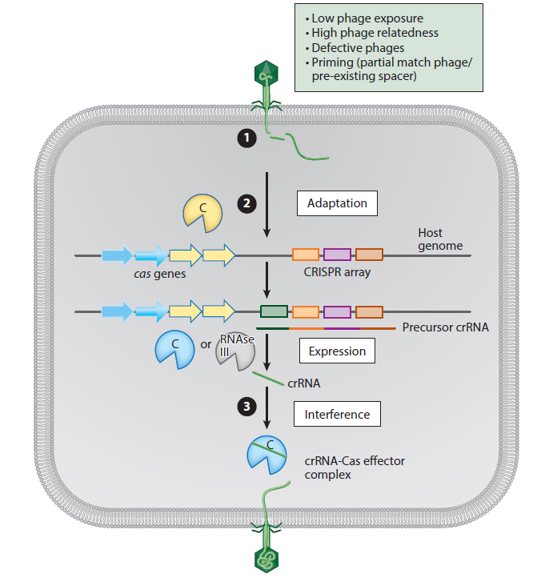

CRISPR
CRISPR (clustered regularly interspaced short palindromic repeats)-Cas (CRISPR-associated) systems: prokaryotic adaptive immune systems that provide protection against infection by parasitic mobile genetic elements, such as viruses and plasmids.
- CRISPR-Cas systems
CRISPR-Cas systems, encoded on prokaryotic genomes, consist of a CRISPR array and cas genes.
CRISPR arrays form the genetic memory of the prokaryotic adaptive immune system. They are composed of repeating sequences (repeats) that are interspersed by variable sequences (spacers) that match sequences from mobile genetic elements such as viruses.
- CRISPR-Cas immune responses(three stages)
CRISPR-Cas immune responses: adaptation, expression, and interference.

During adaptation (upon phage infection), Cas1 and Cas2 capture a piece of phage DNA that is integrated into the host CRISPR locus.
During expression, the CRISPR locus is transcribed into precursor CRISPR RNA (crRNA). This precursor crRNA is processed into crRNA.
During interference, crRNA–Cas complexes bind and cleave the complementary nucleic acid or mark it for destruction by an effector Cas nuclease.
- Evolution
CRISPR-Cas systems are extremely diverse (see sidebars) and are currently classified into 2 classes, 6 types, and 19 subtypes. The diverse nature of CRISPR-Cas, which likely results from rapid evolution and extensive horizontal gene transfer (HGT).
CRISPR-Cas systems are of key importance for bacteria–virus interactions in nature. What evidence there is suggests that CRISPR loci can evolve rapidly in some environments, consistent with an important role in antagonistic coevolution.
- Genome Editing
The requirement for a single Cas effector protein, rather than multisubunit crRNA–Cas complexes, makes Class 2 systems uniquely suited for genome editing technologies.
Cas9 cleavage sites are repaired either using the error-prone nonhomologous end joining DNA repair pathway, which results in loss of function due to sequence deletions or insertions, or using the homology-directed repair (HDR) pathway if a homologous DNA molecule with mutations of interest, which is used by the HDR machinery during repair, is supplied.
- Find CRISPR array
An array is a single CRISPR locus, i.e. set of CRISPR repeats and the intervening unique sequences known as spacers. The goal is to find a chain of local alignments that meet the criteria for being a CRISPR array, i.e. the repeats and spacers are within the expected ranges of length and sequence conservation.
| Tool | Citation | URL |
|---|---|---|
| pilercr | Edgar, R.C.,2007 | https://www.drive5.com/pilercr/ |
| Crass | Skennerton, Connor T et al.,2013 | https://ctskennerton.github.io/crass/ |
| CRISPRCasFinder | Couvin, David et al.,2018 | https://github.com/dcouvin/CRISPRCasFinder |
CRISPRCasFinder: an updation of CRISPRFinder
https://crisprcas.i2bc.paris-saclay.fr/
The program includes: (i) an improved CRISPR array detection tool facilitate expert validation based on a rating system, (ii) prediction of CRISPR orientation and (iii) a Cas protein detection and typing tool updated to match the latest classification scheme of these systems.
CRISPRCasFinder can either be used online or as a standalone tool compatible with Linux operating system.
References:
1.Evolution and Ecology of CRISPR https://www.annualreviews.org/doi/full/10.1146/annurev-ecolsys-121415-032428
2.PILER-CR: Fast and accurate identification of CRISPR repeats https://www.ncbi.nlm.nih.gov/pmc/articles/PMC1790904/